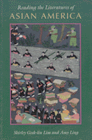

A unique collection of essays explores the diversity of Asian American literature from the 19th century to the present
A unique collection of essays explores the diversity of Asian American literature from the 19th century to the present


 A unique collection of essays explores the diversity of Asian American literature from the 19th century to the present
A unique collection of essays explores the diversity of Asian American literature from the 19th century to the present

|  |
Reading the Literatures of Asian Americaedited by Shirley Geok-lin Lim and Amy Lingpaper EAN: 978-0-87722-936-0 (ISBN: 0-87722-936-8) |
With the recent proliferation of critically acclaimed literature by Asian American writers, this groundbreaking collection of essays provides a unique resource for students, scholars, and the general reading public. The homogeneity implied by the term "Asian American" is replaced in this volume with the rich diversity of highly disparate peoples. Languages, religions, races and cultural and national backgrounds. Examining a century of Asian American literature from the late 19th century up through the contemporary experimental drama of Ping Chong, the contributors address the work of writers with Chinese, Japanese, Korean, Vietnamese, Filipino, East Indian, and Pacific Island ancestry. Asian Canadian and Hawaiian literature are also considered.
Excerpt available at www.temple.edu/tempress
Acknowledgments
Foreword – Elaine H. Kim
Introduction – Shirley Geok-lin Lim and Amy Ling
Part I: Ambivalent Identities
1. The Ambivalent American: Asian American Literature on the Cusp – Shirley Geok-lin Lim
2. Versions of Identity in Post-Activist Asian American Poetry – George Uba
3. Filipinos in the United States and Their Literature of Exile – Oscar V. Campomanes
4. Beyond "Clay Walls": Korean American Literature – Chung-Hei Yun
5. Witnessing the Japanese Canadian Experience in World War II: Processual Structure, Symbolism, and Irony in Joy Kogawa's Obasan – Cheng Lok Chua
Part II: Race and Gender
6. Ethnicizing Gender: An Exploration of Sexuality as Sign in Chinese Immigrant Literature – Sau-ling Cynthia Wong
7. Rebels and Heroines: Subversive Narratives in the Stories of Wakako Yamauchi and Hisaye Yamamoto – Stan Yogi
8. Facing the Incurable: Patriarchy in Eat a Bowl of Tea – Ruth Y. Hsiao
9. "Don't Tell": Imposed Silences in The Color Purple and the Woman Warrior – King-Kok Cheung
10. Tang Ao in America: Male Subject Positions in China Men – Donald C. Goellnicht
Part III: Borders and Boundaries
11. Sense of Place, History, and the Concept of the "Local" in Hawaii's Asian/Pacific American Literatures – Stephen H. Sumida
12. Momotaro's Exile: John Okada's No-No Boy – Gayle K. Fujita Sato
13. Blue Dragon, White Tiger: The Bicultural Stance of Vietnamese American Literature – Renny Christopher
14. From Isolation to Integration: Vietnamese Americans in Tran Dieu Hang's Fiction – Qui-Phiet Tran
15. South Asia Writes North America: Prose Fictions and Autobiographies from the Indian Diaspora – Craig Tapping
Part IV: Representations and Self-Representations
16. Creating One's Self: The Eaton Sisters – Amy Ling
17. The Production of Chinese American Tradition: Displacing American Orientalist Discourse – David Leiwei Li
18. Clashing Constructs of Reality: Reading Maxine Hong Kingston's Tripmaster Monkey: His Fake Book as Indigenous Ethnography – Patricia Lin
19. The Death of Asia on the American Field of Representation – James S. Moy
20. Ping Chong's Terra In/Cognita: Monsters on Stage – Suzanne R. Westfall
Notes on Contributors
Shirley Geok-lin Lim is Professor of Asian Studies at the University of California at Santa Barbara. She is also editor (with John Blair Gamber, Stephen Hong Sohn and Gina Valentino) of Transnational Asian American Literature (Temple).
Amy Ling is Associate Professor of English and Director of Asian American Studies at the University of Wisconsin, Madison. She is also editor of Yellow Light (Temple).
Contributors: Oscar V. Campomanes, King-Kok Cheung, Renny Christopher, Cheng Lok Chua, Donald C. Goellnicht, Ruth Y. Hsiao, David Leiwei Li, Patricia Lin, James S. Moy, Gayle K. Fujita Sato, Stephen H. Sumida, Craig Tapping, Qui-Phiet Tran, George Uba, Suzanne R. Westfall, Sau-ling Cynthia Wong, Stan Yogi, Chung-Hei Yun, and the editors.
Asian American Studies
Literature and Drama
Asian American History and Culture, edited by K. Scott Wong, Linda Trinh V�, and Cathy Schlund-Vials.
Founded by Sucheng Chan in 1991, the Asian American History and Culture, series has sponsored innovative scholarship that has redefined, expanded, and advanced the field of Asian American studies while strengthening its links to related areas of scholarly inquiry and engaged critique. Like the field from which it emerged, the series remains rooted in the social sciences and humanities, encompassing multiple regions, formations, communities, and identities. Extending the vision of founding editor Sucheng Chan and emeriti editor Michael Omi and David Palumbo-Liu, series editors K. Scott Wong, Linda Trinh V�, and Cathy Schlund-Vials continue to develop a foundational collection that embodies a range of theoretical and methodological approaches to Asian American studies.
© 2015 Temple University. All Rights Reserved. This page: http://www.temple.edu/tempress/titles/853_reg.html.